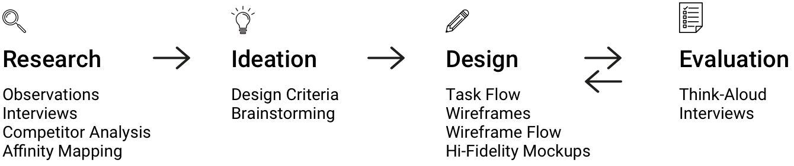
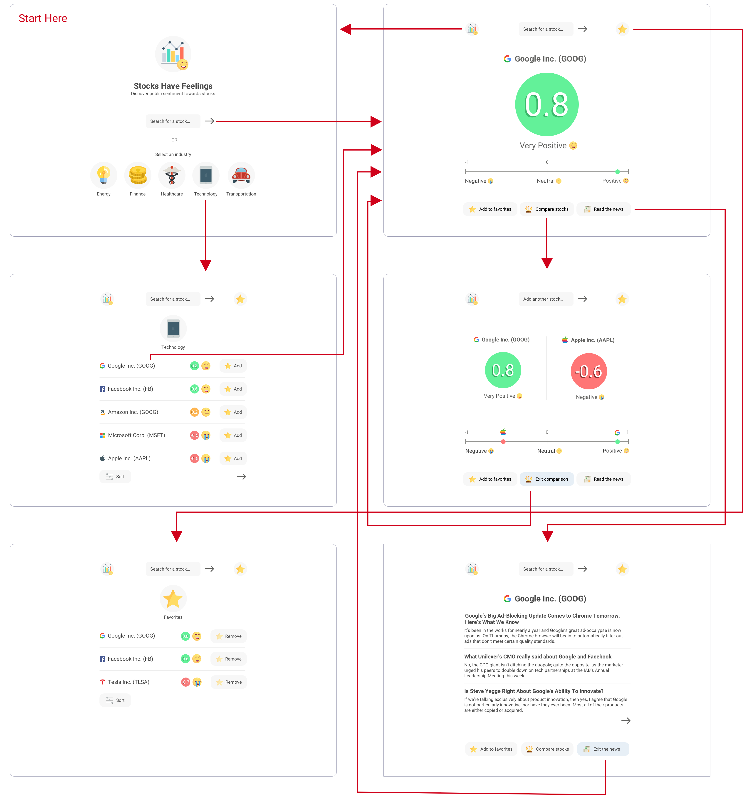
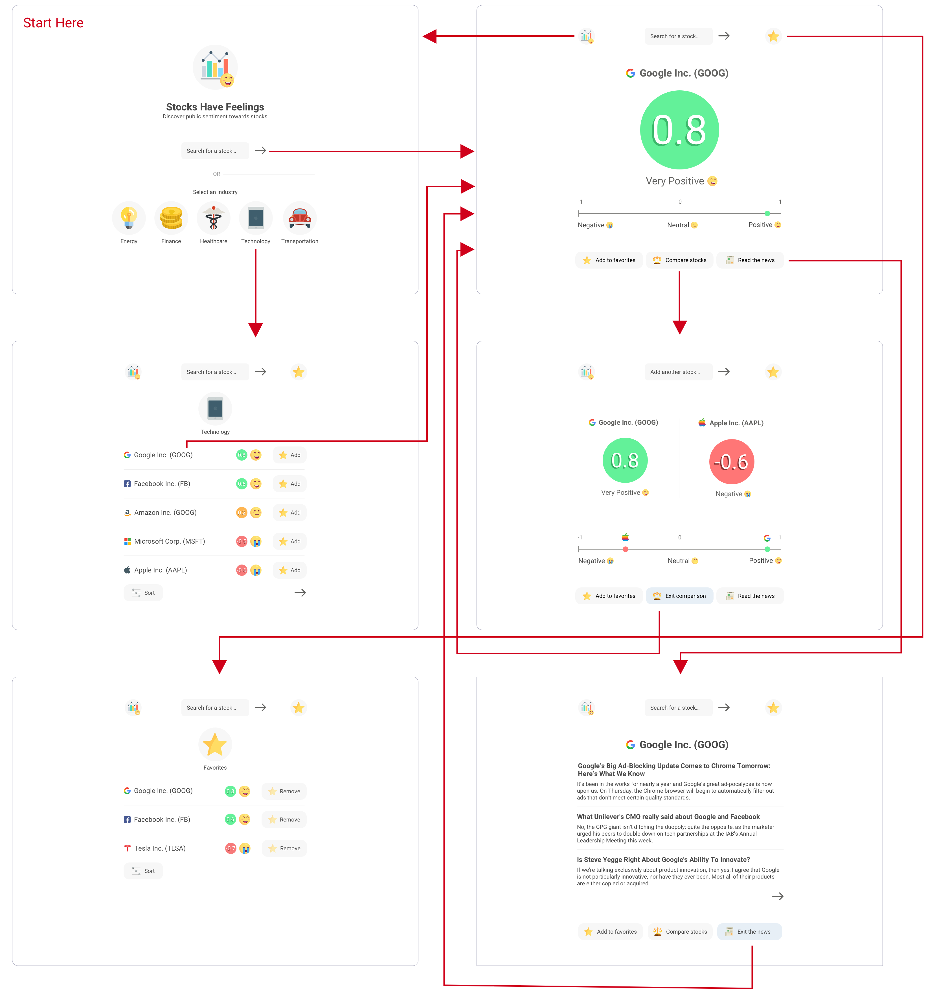

Conveying public sentiment towards company stocks based on social media
Problem Stock trading can seem daunting. When first starting out, new users may feel overwhelmed by the number of graphs, charts, and financial concepts.
This project attempts to address the learning barrier for stock trading. More specifically, how can beginners be introduced to stocks in a simple and intuitive way?
Design Process  Research Preliminary research showed that the stock market is generally affected by three factors: fundamental factors, technical factors, and market sentiment.
Based on interviews with a variety of stock traders, it was revealed that:
- Fundamental and technical factors typically require extensive background knowledge to fully understand
- Market sentiment was thought to be the easiest of the three to understand: if many people act on a belief that a stock is going to do very well, then it's likely for its price to rise
As a result, the direction of the project shifted to creating an intuitive tool for presenting market sentiment data with the intent of familiarizing beginner traders with a relatively simple yet pervasive concept in stock trading.
Early Design The early design focused on creating a minimum viable product. The process of absorbing market sentiment data was broken down into two main user tasks:
- Searching for a stock
- Understanding the sentiment rating
Click to learn more about the sentiment rating system.


Observations and feedback from the beginner traders revealed:
- Interface felt easy to navigate
- Difficult to discover new companies for their sentiment ratings
- Minimalistic search bar interface felt very open-ended; some direction would be appreciated
Moreover, observations and feedback from the expert traders showed that:
- Sentiment data was too sparse for their own uses, but it may be useful for beginners
- Individual sentiment ratings did not tell enough of the story without more contexual data
- Stocks are browsable by industry categories
- Two or more stocks' sentiment ratings can be compared side-by-side
- Latest news articles about the stock company can be shown
The intent behind categorizing stocks by industry was to encourage browsing and discovery of new stocks rather than solely looking-up familiar stocks. This feature would also help to illuminate industry trends in the stock market.
Moreover, the motivation behind including relevant news articles was to enable interested traders to investigate the source material and make their own judgements.
 



For front-end prototyping with real data, a basic front-end web prototype was coded using:
- HTML
- CSS
- JavaScript (jQuery)
- New York Times API
- IBM Watson Sentiment API
When the user searched for a stock, the New York Times API was called and returned several news articles about the stock's company. These news articles were then fed into the Watson sentiment API to calculate an average sentiment rating. (This front-end prototype is still being completed.)
For future iterations, there would be a focus on:
- Refactoring the code base using Angular or React for better extendability and maintainability
- Experimenting with Twitter API to perform sentiment analysis on stock-related tweets